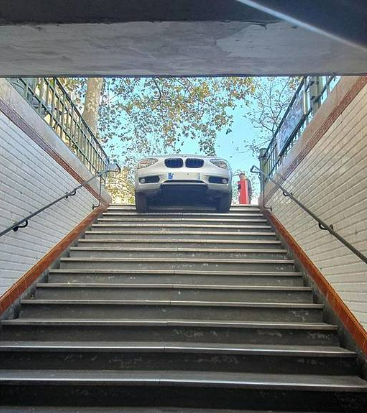

Nouvelle BMW Série 1 (2025). Un renouvellement avancé, puis une version électrique
BMW remplacera l’actuelle Série 1 dès 2025. La quatrième génération de la compacte
a été surprise sur la route lors d’une séance de mise au point. En 2027, elle aura son pendant électrique sur une plate-forme distincte.

BMW Série 5 : la route est son royaume
Archétype de la grande routière dynamique, la BMW Série 5 se décline désormais en version i5 électrique à grande autonomie et facilement rechargeable.

Il prend le métro parisien pour un parking, sa BMW reste coincée dans les escaliers
Un automobiliste a confondu l’entrée du métro avec celle d’un parking, à Neuilly-sur-Seine (Hauts-de-Seine) Sa BMW s’est retrouvée bloquée dans les escaliers. L’incident n’a fait aucun blessé.

Une mise à jour protège l’iPhone 15 du chargeur des BMW
Toujours à la pointe, BMW propose des chargeurs sans fil dans ses dernières voitures. Toutefois, ces derniers sont responsables de plusieurs bugs sur l’iPhone 15. Apple vient de sortir une mise à jour pour corriger le problème.

BMW X2 II : LA PRODUCTION DÉBUTE EN ALLEMAGNE
Le constructeur bavarois a débuté la production du nouveau BMW X2 II en Allemagne, dans son usine de Ratisbonne qui produit également les BMW Série 1 et X1.

Le groupe GCA renforce ses liens avec BMW
Le distributeur automobile de Cholet (Maine-et-Loire) ouvre une troisième concession moto en Normandie sous enseigne BMW Motorrad. Une diversification signant également le renforcement des liens de GCA avec BMW en tant que marque premium du groupe.